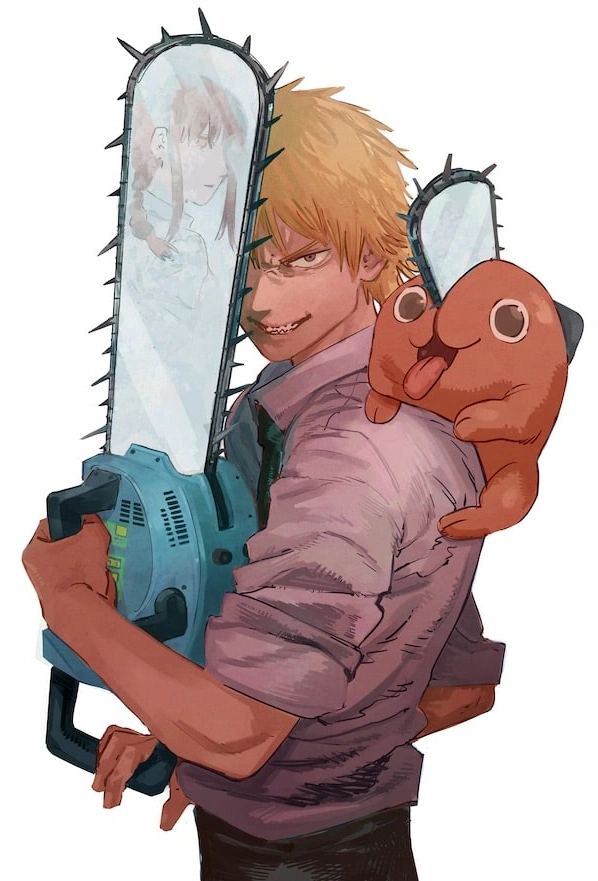
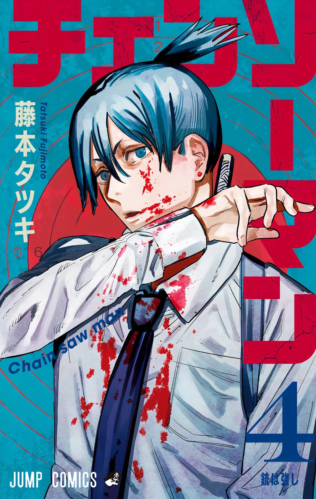
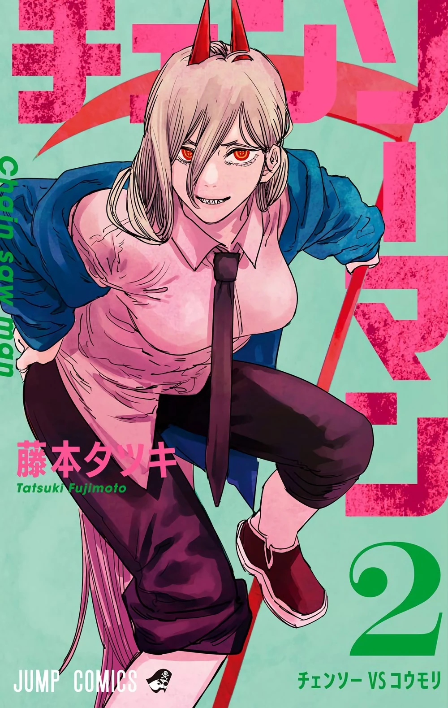
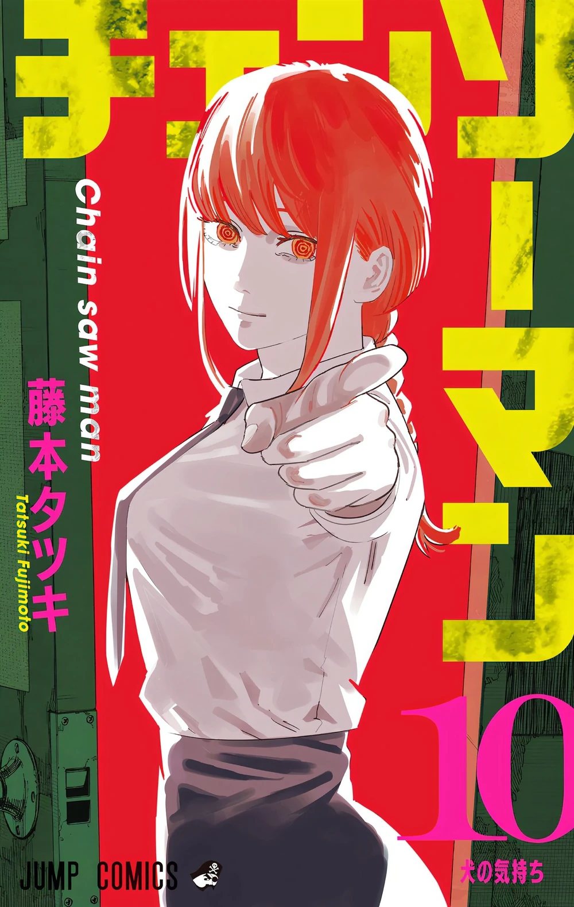
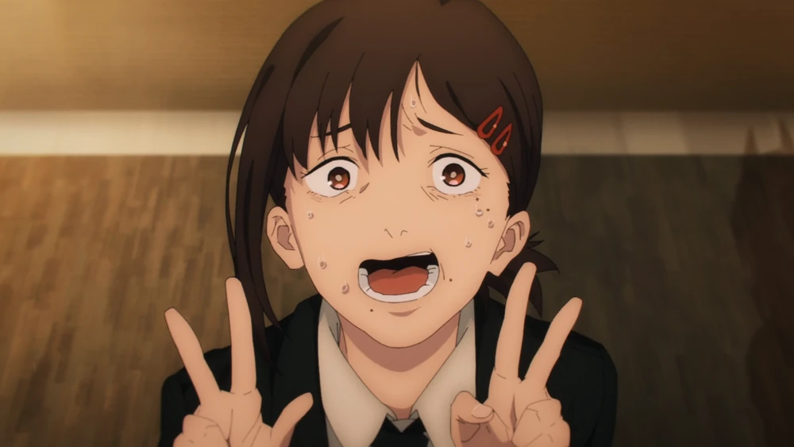
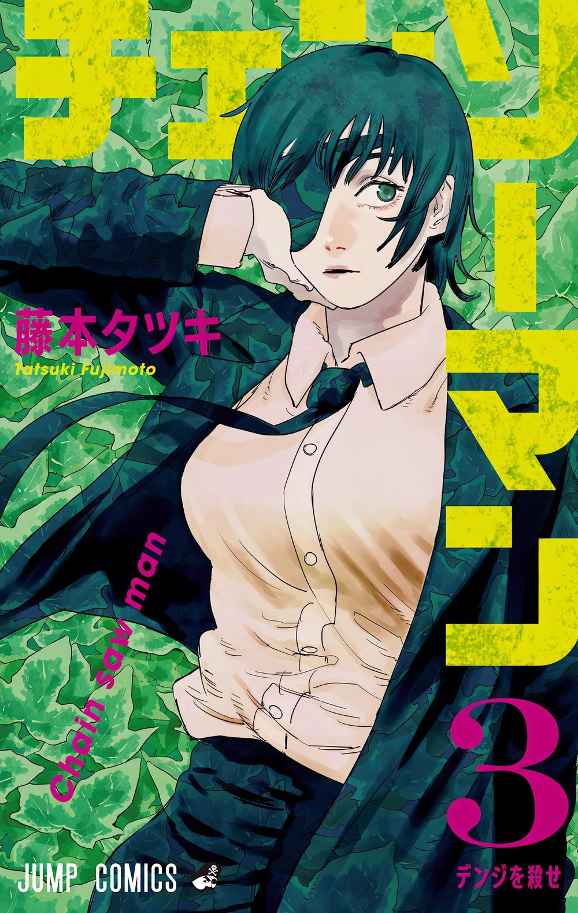

Denji
The titular protagonist of Chainsaw Man.
Denji is both brash and naive as a result of being unable to have a formal education and socialize due to living in severe poverty. His personality comes off as rude and harsh in an almost childish way. However, he has a good sense of empathy towards other people, willing to save those in danger as much as he could, showing he is a kind-hearted person despite his shortcomings. While Denji doesn't necessarily possess the highest intelligence, he is capable of clever ideas to take down Devils.
Aki Hayakawa
The deuteragonist of Chainsaw Man.
Aki generally appeared to be a very stoic man who acted mature and sometimes blunt to the point of rudeness when he was with his fellow Devil Hunters, but he was actually fairly softhearted. He had a tendency to get attached to others easily, and hated to see people get hurt, especially his close friends. Unlike many of his associates, he was described by Himeno as being a "normal person", in the sense that he still grieved for those lost and had not become jaded enough to close his feelings off.
Power
The tritagonist of Chainsaw Man.
Power is childish, greedy, and almost entirely self-motivated. She tends to fight as if she has something to gain and is certain of her victory, and has no problems with running away from a fight where she is outmatched. She feels the need to boast her superiority over her fellow Devil Hunters due to her status as a Fiend. She has no loyalty to humans or Devils, openly admitting that she will join whichever is the winning side. Power is a compulsive habitual liar. Power is also rude, unkempt, and feels as though those around her should clean up after her.
Makima
The Boss of Denji, Aki, Power, Kobeni, and Himeno.
On the surface, Makima seems to be a kind, gentle, social and friendly woman who is usually seen wearing a smile on her face the entire time and acts relaxed and confident even during a crisis, speaking in a professional tone to her workers. As her natural appearance is nearly identical to that of a human, she avoids disclosing her Devil nature to most of her underlings and spends much of the series posing as a human contracted to a Devil rather than a Devil herself. However, this is only a facade that she uses to fulfill her ultimate goal.
Kobeni Higashiyama
A popular side character of Chainsaw Man.
Kobeni is exceptionally cowardly with few moments of courage. She is shown to easily crack under pressure and breaks down in tears when the group becomes trapped in the hotel and she is confronted with the possibility of them all starving to death without any rescue. Her sense of fear causes her to take drastic action in order to save herself such as turning on Denji and threatening him at knifepoint once a Devil promised to free her in exchange for Denji's life. However, when Kobeni gets into action she had proven to be cool-headed and efficient.
Himeno
A character who pushes Aki to keep going and his love interest.
Himeno was shown to be a mature and experienced superior to the new recruits working under her. She generally carries herself with upbeat body language and was capable of staying calm under extremely stressful situations. Himeno was shown to be very efficient and blunt in her duty as a Devil Hunter. She responded to a small and seemingly insignificant Devil by almost immediately using her Ghost Devil to subdue it. She was shown to have a more stern side and little tolerance for behavior from new recruits that would endanger or harm her subordinates, as she swiftly took out Kobeni Higashiyama when the latter attempted to stab Denji.
